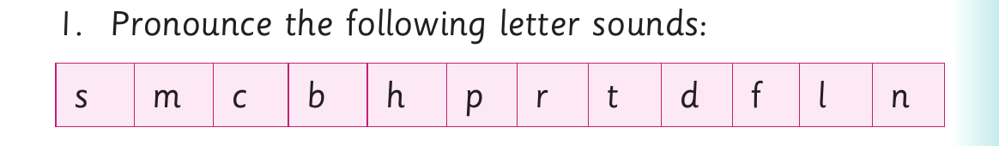
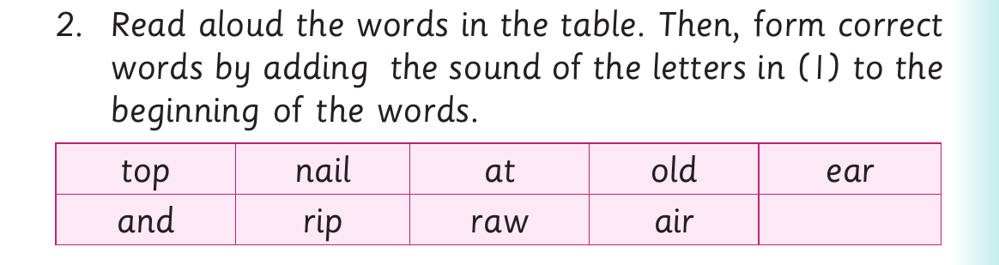

Adding beginning sounds - continued
3. Pronounce the words you have formed in (2). 4. Read the following sentences aloud: (a) A man in the car has a scar. (b) The ox fights with the fox. (c) They went up the mountain with the cup. (d) The lock is near the clock. (e) A nail is far from the snail.
Activity 3

1. Pronounce the following letter sounds: s m c b h p r t d f l n

2. Read aloud the words in the table. Then, form correct words by adding the sound of the letters in (1) to the beginning of the words. top nail at old ear and rip raw air
Example: top- s top
3. Pronounce the new words you have formed in (2). 4. Read the following sentences aloud: (a) Never rip the map before you finish the trip. (b) The old people told us stories. (c) At the party, he wore a hat. (d) They were near the top and had to stop. (e) The air at the top felt fair.